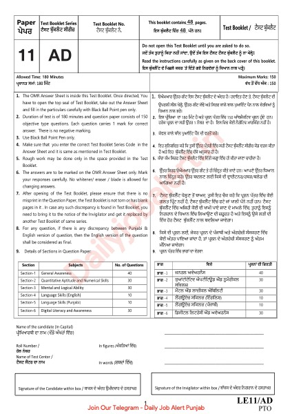

Download
Download Pp Constable Intelligence and Investigation 14 Oct 2022 (PDF) - 10.9 MB, 46 pages, hosted on this site. No sign-up, no email wall and no redirect through a third party.
About this file
- File name:
PP_Constable_Intelligence_and_Investigation_14_oct_2022_Paper.pdf - Pages: 46
- Size: 10.9 MB
- Filed under: Previous Year Questions
- Published: 1 October 2026
This page was generated automatically when the PDF was placed in content/previous-year-questions/punjab-police-constable-intelligence-investigation/. Its title, slug, description and date come from the file name, and its page count and summary were read out of the PDF itself - the file is the document.